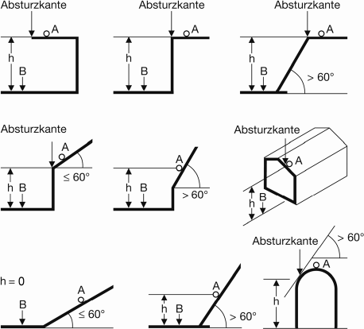

ist die Kante, über die Beschäftigte abstürzen können (siehe Abb. 1). Eine Absturzkante ist definiert als:

Abb. 1 Absturzkanten und Absturzhöhen (h)
h = senkrechter Höhenunterschied zwischen A = Standfläche bzw. der Absturzkante und B = Auftrefffläche
im Sinne dieser ASR (siehe Abb. 1) ist der senkrechte Höhenunterschied zwischen der Standfläche der Beschäftigten an Arbeitsplätzen und Verkehrswegen bzw. der Absturzkante und der angrenzenden tiefer liegenden ausreichend großen und tragfähigen Fläche (Auftrefffläche).
im Sinne dieser ASR ist ein unkontrolliertes Abgleiten von Beschäftigten bei Arbeiten auf geneigten Flächen (z. B. aufgrund der Neigung oder der Beschaffenheit der Standfläche) über eine Absturzkante.
im Sinne dieser ASR ist eine zwangsläufig wirksame Einrichtung, die einen Absturz auch ohne bewusstes Mitwirken der Beschäftigten verhindert, z. B. eine Umwehrung (siehe auch Punkt 3.8) oder Abdeckung.
im Sinne dieser ASR ist eine zwangsläufig wirksame Einrichtung, die abstürzende Beschäftigte auch ohne deren bewusstes Mitwirken auffängt und vor einem weiteren Absturz schützt, z. B. Schutznetz, Schutzwand oder Schutzgerüst.
dienen dem Schutz vor Absturz einzelner Beschäftigter oder dem Auffangen abstürzender Beschäftigter, z. B. Persönliche Schutzausrüstung gegen Absturz (PSAgA).
ist eine Einrichtung zum Schutz der Beschäftigten gegen Absturz, z. B. Brüstung, Geländer, Gitter oder Seitenschutz. Im Gegensatz zum meist durchbrochenen Geländer handelt es sich bei einer Brüstung um eine geschlossene, in der Regel massiv ausgeführte Wandscheibe bzw. im Fall der Fensterbrüstung um einen Teil einer Außenwand.
im Sinne dieser ASR sind Bereiche, in denen Beschäftigte nicht durch bauliche Maßnahmen vor einer Gefährdung durch Absturz oder herabfallende Gegenstände geschützt sind.
sind auch solche Materialien, die umstürzen, abgleiten, abrollen oder auslaufen können.
sind Bauteile, die beim Betreten nicht brechen und durch die Beschäftigte nicht hindurch stürzen können. Nicht durchtrittsichere Bauteile können z. B. sein:
ist der Bereich, in dem Beschäftigte im Rahmen ihrer Arbeit - ggf. auch nur kurzzeitig - tätig sind.